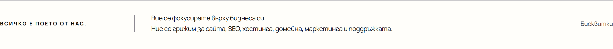
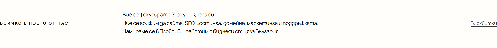
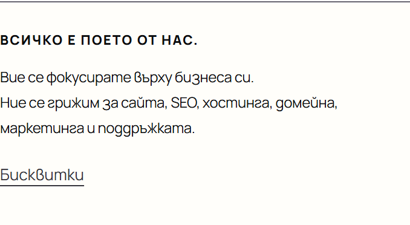
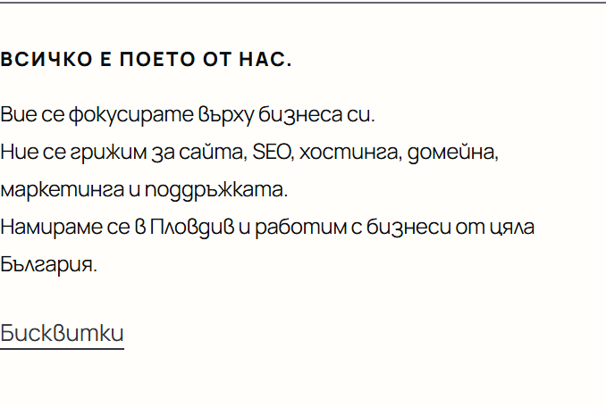

Всички промени по-долу са направени само на вашия компютър. Нищо не е качено на сайта и нищо не е записано в GitHub, докато не кажете „да“. На самата страница се вижда само един нов ред във футъра. Всичко останало е за Google.
Заглавието вече започва с думите, които хората търсят („изработка на сайт“), и запазва вашия слоган. Описанието вече казва Пловдив. Google показва това на свой ред: този вид е приблизителен.
<title>Lumina — Сайт за вашия бизнес, изцяло от нас</title><title>Изработка на сайт за вашия бизнес, изцяло от нас | Lumina</title><meta name="description" content="Lumina прави сайтове за малкия бизнес в България: …"><meta name="description" content="Lumina прави сайтове за малкия бизнес в Пловдив и цяла България: …">
Същото заглавие се вижда и в раздела. На английски (EN) става „A website for your business, built by us | Lumina“.
Картичката, която излиза при споделяне в чат (Viber, Facebook, Instagram), не се променя: тя остава „Lumina — Сайт за вашия бизнес, изцяло от нас“.
Един нов ред най-долу на страницата, за да види Google, че сте в Пловдив. На английски: „We are based in Plovdiv and work with businesses all over Bulgaria.“
Преди
След


<p class="footer-description">Вие се фокусирате върху бизнеса си.<br>Ние се грижим за сайта, SEO, хостинга, домейна, маркетинга и поддръжката.<br>Намираме се в Пловдив и работим с бизнеси от цяла България.</p>
Скрита „визитка“ в кода на страницата. Посетителите не я виждат, но Google я използва за местни търсения като „изработка на сайт Пловдив“.
"areaServed":{"@type":"Country","name":"Bulgaria"}"address":{"@type":"PostalAddress","addressLocality":"Пловдив","addressCountry":"BG"}, "areaServed":[{"@type":"City","name":"Пловдив"},{"@type":"Country","name":"Bulgaria"}]
Три блока от старата версия на сайта стояха скрити в кода. Посетителите никога не са ги виждали, но Google може да ги прочете. Вече ги няма. Менюто и бутоните работят както преди (проверено във Firefox и Chrome, на компютър и телефон).
Ако Lumina има страница във Facebook или Instagram, изпратете ми адресите. Ще ги сложа като малки връзки във футъра и в данните за Google. Без тях не съм добавил нищо.
Пловдив е мое предположение, защото клиентите ви са оттам. Ако сте в друг град, кажете ми.